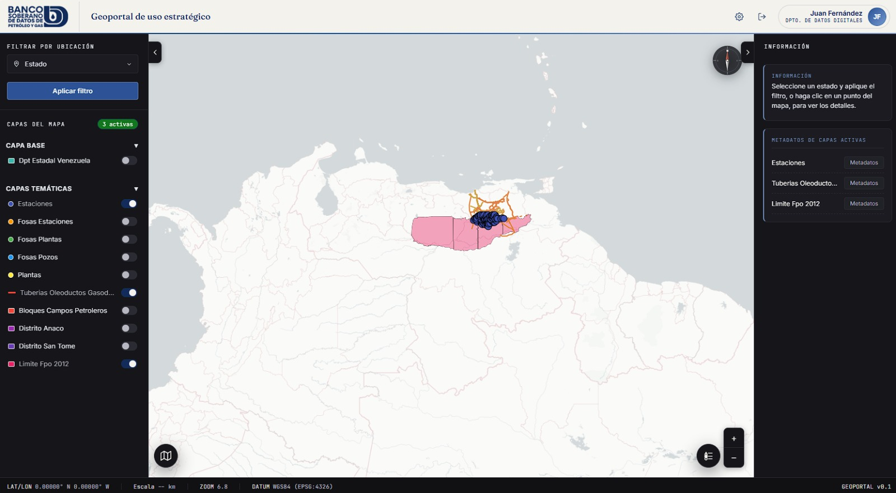

128
Capas de datos activas
Un banco de datos soberano que centraliza, versiona y sirve información geoespacial crítica a los organismos que la necesitan — con control de acceso por rol y trazabilidad de cada consulta.
Capas activables, filtrado por ubicación y ficha técnica de cada elemento, sobre un lienzo cartográfico pensado para lectura operativa — de día y de noche.

Activa, combina y ordena capas temáticas sin recargar el mapa. Cada capa mantiene su propio historial y fuente.
Localiza por estado o municipio y el mapa ajusta el zoom automáticamente a la extensión seleccionada.
Cada usuario ve solo las capas y los organismos que le corresponden, con sesión trazada de inicio a fin.
Cada entidad del mapa despliega sus atributos, fuente y fecha de actualización al seleccionarla.